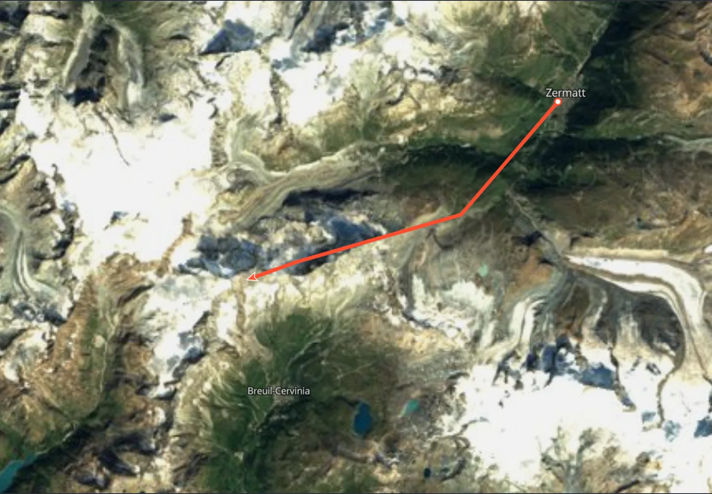
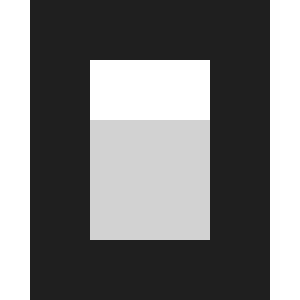
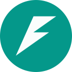
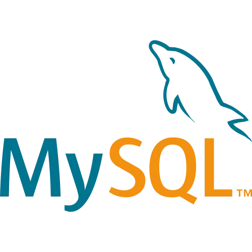
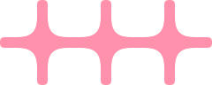

Sentinel-2 cloudless · EOX · © OpenStreetMapEditor de rotas e vídeo
Desenhe seu Caminho
Desenhe no mapa ou importe um GPX e transforme o trajeto em um vídeo animado.
Portfólio & oficina digital
Trabalho com cibersegurança e uso inteligência artificial para desenvolver e testar automações. Na oficina, construo ferramentas, jogos e experimentos para a web.

Sentinel-2 cloudless · EOX · © OpenStreetMapEditor de rotas e vídeo
Desenhe no mapa ou importe um GPX e transforme o trajeto em um vídeo animado.


FastAPI
MySQL
n8n